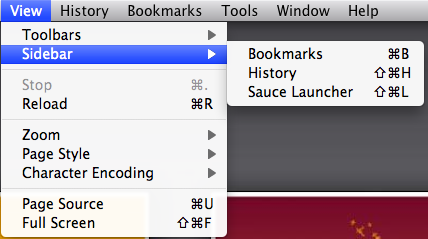
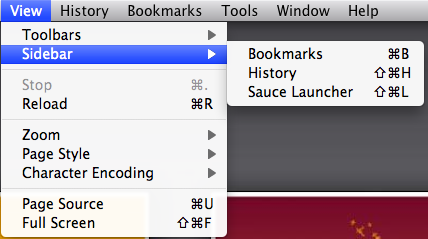

Thanks for installing Sauce Launcher!
Let us help you get started...
You have two options to open the Sauce Launcher sidebar:
Menu Screenshot

- On a Mac press: "Cmd + Shift + L"
- Use the Firefox sidebar menu, at the top of the screen between 'Edit' and 'History', click 'View'.
- - Next click 'Sidebar'
- - Finally click 'Sauce Launcher'
Menu Screenshot

Thanks for using Sauce.